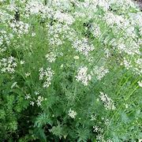

Basonym of Drug
Jiraka
Main Synonym
- Ajaji
- Kana
- Jarana
- Dirgha Jiraka
Regional Name
- Bengali: Jira
- Gujarati: Jiru
- Hindi: Safed Jira
- Tamil: Chirakam
- Telugu: Jilakarra
- English: Cuminum Seed
Botanical Name
Cuminum cymnium
Family
Umbelliferae
Classification (Gana)
Aacharya Charaka: Shola Prashamana
Aacharya Sushruta and Acharya Vagbhata: Pippalyadi Gana
External Morphology
Annual small herb
Useful Parts
Important Phytoconstituent
- Cuminin
- Imperatorin
- Oxyimpinellin
- Apigenin
- Cuminaldehyde
Rasa Panchak
- Rasa: Katu
- Guna: Laghu, Ruksha
- Virya: Ushna
- Vipaka: Katu
Action
Therapeutic Indication
- Grahi (Reduces excessive secretions)
- Atisarahara (Anti-diarrheal)
- Krimihara (Antihelmintic)
- Jwarahara (Anti-pyretic)
Therapeutic Uses
- Jwara: Jiraka powder with old jaggery is beneficial in the treatment of fever.
- Amlapitta: Ghee prepared with Jiraka and Dhanyaka powder is beneficial for heartburn.
- Atisara: Jiraka powder with buttermilk is beneficial in diarrhea.
Dose
Formulations
- Jirakadhyarista
- Jirakadi Modaka
- Jiraka Ghrita
- Jirakadhya Ghrita
Adverse Effect
Not Known
Remedial Measure
Not required